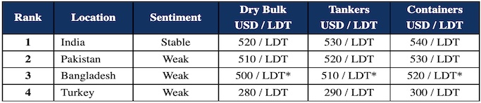

inWeekly Demolition Reports10/01/2023

As we reflect on the year gone by and look forward to a busier and healthier 2023 for the various recycling destinations, 2022 has been the lowest year for more than a decade across all ship recycling locations.
All freight / dry sectors started to fly simultaneously at various points during 2022 and even the wet / tanker markets started rallying thereafter, and with stunning results. However, Container and Dry Bulk markets finally started to cool off towards the end of the year, and it is from these segments that we can anticipate seeing a majority of the recycling tonnage in 2023.
Compared to previous years, a much smaller number of vessels have been beached in India during 2022, and it is a similar story in Pakistan, Bangladesh, and even Turkey, where local Recyclers have been likewise starved of tonnage.
The financial situation in Pakistan as well as Bangladesh has started to become a real cause of concern to the industry, with governments in both countries now unwilling to sanction fresh L/Cs from their precious (and dwindling) U.S. Dollar reserves.
For the time being, the only sub-continent market of any reliability remains India, and whilst the supply of vessels remains mercifully low, prices are managing to hold up somewhat in Alang, while the number of small LDT arrivals at Chattogram’s waterfront has started to pick up in 2023.
Unsurprisingly, 2023 seemed to have kicked off well in Turkey as well, as steel plate prices (both import and local steel) have reported noteworthy gains over the last couple of weeks, resulting in post-New Year prices jumping by nearly USD 40/MT, finally breaching USD 300/MT – certainly an impressive return to form.
Overall, in order for levels to maintain their present buoyancy (bearing in mind the decade average on scrap prices of around USD 350/LDT), we will need each market to be firing on all cylinders this year to absorb the expected influx of vessels that will surely be seen.
For week 1 of 2023, GMS demo rankings / pricing for the week are as below.

📄 Download PDF: Ship-recycling-market-insight-week-01-2023-Missing-in-Action.pdfSource: GMS,Inc. ,https://www.gmsinc.net/gms_new/index.php/web